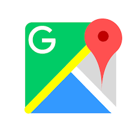

Las 5 aplicaciones web más famosas actualmente
Google maps

Esta aplicación te indica todo lo que necesitas saber a la hora de hacer
un trayecto a pie, en bici, en coche o con transporte público. Puedes
llevarla en tu smartphone y, con apoyo de otras aplicaciones, utilizarla
como GPS. Una de las cosas que destaca de la aplicación es la información
del tiempo que durará el desplazamiento. Maps tiene en cuenta el tráfico real
y las obras y accidentes para mostrar una idea más o menos real del tiempo
de llegada. Se puede configurar para evitar algunas rutas específicas, como
carreteras de peaje, o para que muestre otras las alternativas. Y si lo deseas,
puedes poner una capa para que te indique gasolineras, parkings, restaurantes, etcétera.
Fecha de Lanzamiento
8 de febrero de 2005
Google Maps es un servidor de aplicaciones de mapas en la web que pertenece a Alphabet Inc
Tecnologias implementadas
Facebook

Es una red social que permite enviar mensajes a las personas o grupos escogidos. Los mensajes pueden ir
acompañados de enlaces, vídeos, fotografías… No solo es utilizada por particulares, también hay empresas
que la emplean para publicitar sus productos e informar de cambios o promociones a sus cliente.
Fecha de Lanzamiento
4 de febrero de 2004
Mark Zuckerberg es presidente y director ejecutivo de Meta,
empresa que fundó originalmente con el nombre de Facebook en 2004. Se encarga de marcar la dirección general y
la estrategia de producto de la empresa.
Tecnologias implementadas
Spotify

Está orientada a la música. Tras el registro y creación
de tu cuenta disfrutarás de miles de canciones de grupos nuevos y no tan nuevos.
Spotify tiene publicidad pero, si quieres evitarla, puedes pagar su tarifa y tener acceso a
música ilimitada sin anuncios y sin conexión.
Fecha de Lanzamiento
14 de julio de 2011
Spotify es una empresa de origen sueco, su creador se llama Daniel Ek, el cual creó su primera
empresa con 14 años, contratando a sus compañeros de instituto para trabajar en la creación y
diseño de webs.
Tecnologias implementadas
- WordPress
- Phyton
- Big Data
Youtube

Esta aplicación permite compartir y visualizar millones de vídeos creados por los usarios.
Los famosos youtubers crean canales a los que te puedes suscribir y así estar informado en
todo momento de las novedades.
Fecha de Lanzamiento
14 de febrero de 2005
Youtube fue fundado por Chad Hurley, Steve Chen y Jawed Karim.
Estos eran trabajadores de PayPal en aquel momento, y consiguieron el dominio del sitio www.youtube.com a
mediados de febrero de 2005.
Tecnologias implementadas
- WordPress
- Phyton
- Big Data
LinkedIN

Está diseñada para utilizarla en el ámbito profesional. En ella se puede ingresar tu perfil
laboral y ser visto por aquellas empresas o particulares que buscan servicios específicos.
Estar presente es una buena opción para ser conocido a nivel profesional.
Fecha de Lanzamiento
28 de diciembre de 2002
El fundador de LinkedIn, Reid Hoffman, fundó LinkedIn a finales de 2002.
En sólo seis años, la compañía de Mountain View
Tecnologias implementadas